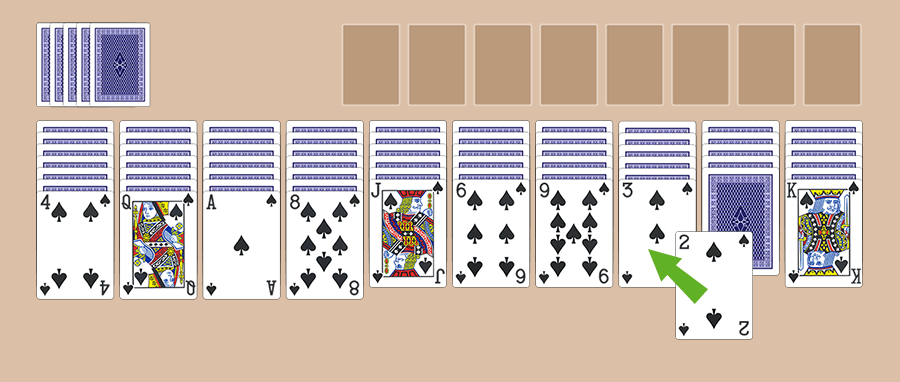

SPIDER SOLITAIRE
Spider is a Solitaire game made popular by Microsoft Windows. It is played by 1 person only and uses 2 decks of cards. To fully understand how to play Spider Solitaire, we will first take a look at the playing field. The field is made up of 3 sections:
- The Tableau is the section in which the game is played. Here, around half (54 cards) of the 104 cards in play are arranged in 10 columns. The top cards are always dealt face up.
- The Stock contains the 50 cards that have not yet been dealt. Each column in the tableau gets a new card whenever you tap on this stock.
- The Foundation will ultimately contain all 104 cards, sorted by colour and in order from King to Ace, arranged in 8 stacks.
The aim of Spider Solitaire is to move all cards from the tableau to the foundation. For this purpose, you must arrange all cards in the tableau in descending order in the same suit, from King to Ace. Once you have completed a sequence, it will automatically be moved to the foundation and you can start on the next sequence and so on, until you have cleared the whole tableau.
Our Spider Solitaire game has 3 levels: 1 colour (easy), 2 colours (more challenging), and 4 colours (extremely challenging, only for the real expert). Level 1 is played differently from the other two levels:
1 suit
This is our beginner's level. It is played with just one suit: Spades! In this game, you do not need to take account of the colours when moving the cards. The most important rule of the Spider Solitaire game is that you can only place a card on top of another card that is 1 point higher in value.
For example, you can only place the 2 of Spades on the 3 of Spades (see illustration). It is also possible to move several cards at once, if they are all in ascending order with a one point difference. For example if the 7, 6, and 5 of Spades are on top of each other, then you can move all three at the same time to an open 8. Whenever you move a card that was face down, the previously hidden card will be turned up. Furthermore, it is important to know that you can place any random card in an empty column and that you go back one step using the undo button.
2 and 4 suits Spider Solitaire
This functions largely in the same way as playing with a single suit, except that you need to take the colours into account. When playing with 2 or 4 suits, you can simply move cards to other cards that are one point higher in value, irrespective of the colour. For example, a Jack of Clubs can be placed on a Queen of Hearts. However, complete sequences can only be cleared to the foundation if they belong to the same suit. So, it is a good idea to arrange the cards by colour as much as possible when starting the game.
Dealing new cards from the stock
You must deal new cards when you can no longer move any cards. You can only do this if there is at least 1 card in each column. So, fill all empty spots before dealing.
A few more handy tips for winning:
- Empty columns: try to empty columns as quickly as possible and use them as temporary storage to see under cards that are face down, to check if they are useful. Use the undo button to go back and try another column.
- Managing columns: try to split columns into 2 different categories: work stacks and waste stacks. Try to keep the work stacks neatly arranged and use them to build parts of sequences. The waste stack serves for cards that are no longer useful.
- Take your time: the speed with which you complete a game does not yield points. So, take your time to find the right move.
- Using a keyboard? Use the key combination CTRL + Z to undo a move and CTRL + H to get a hint.